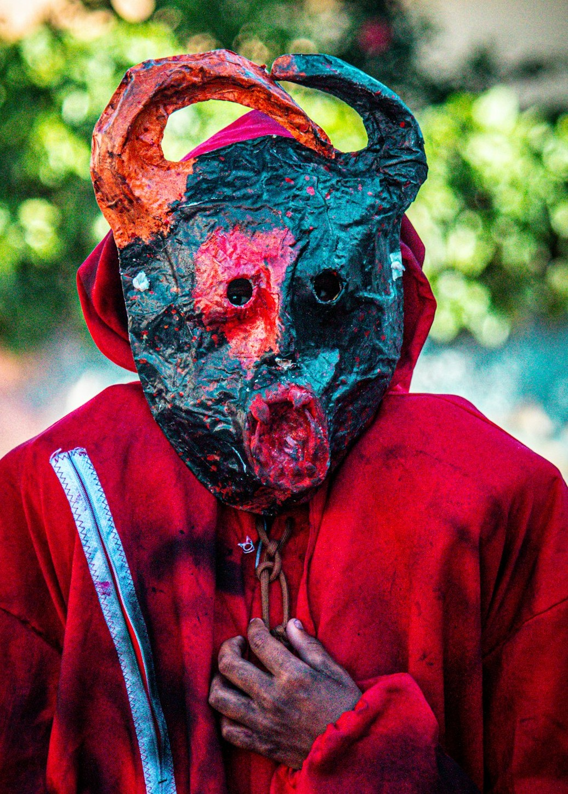
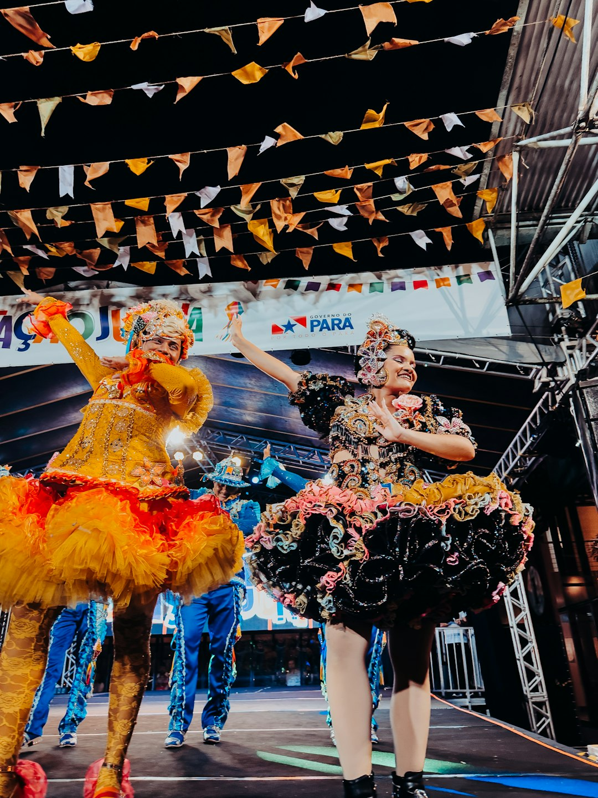
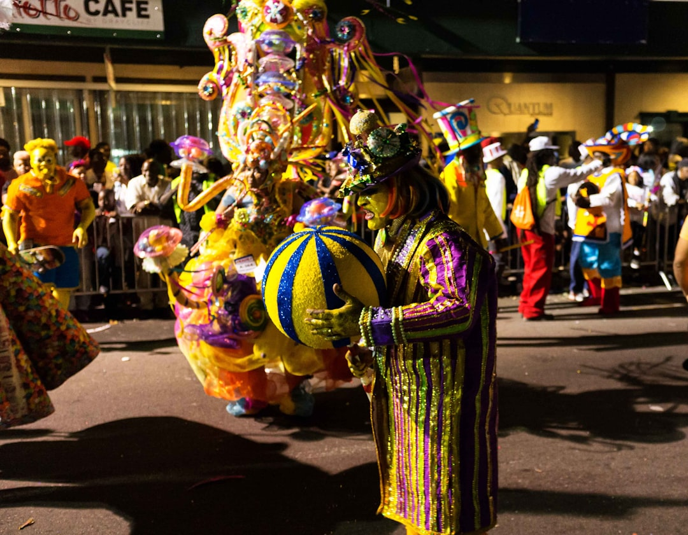
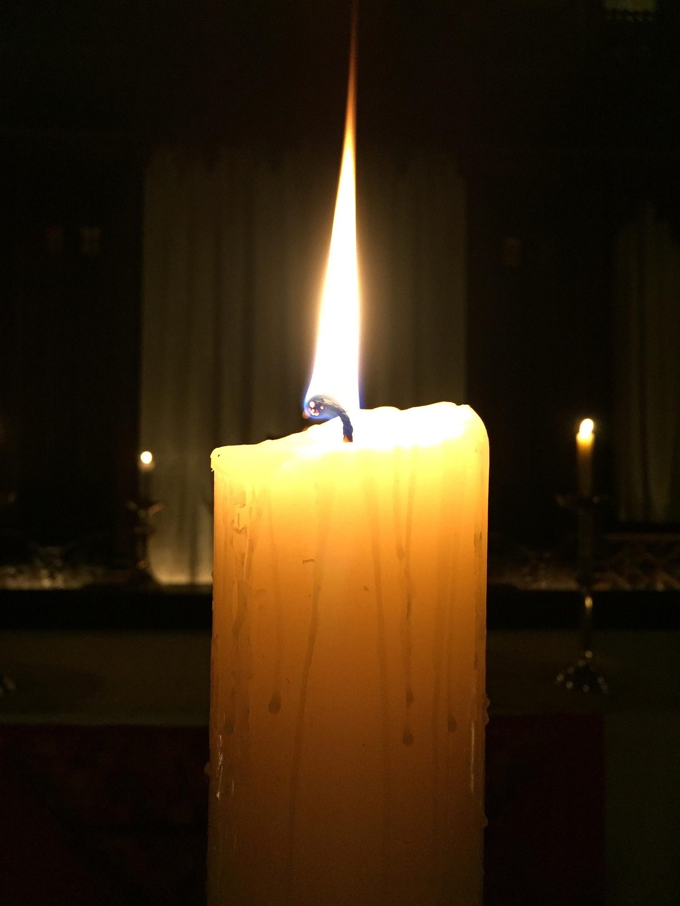
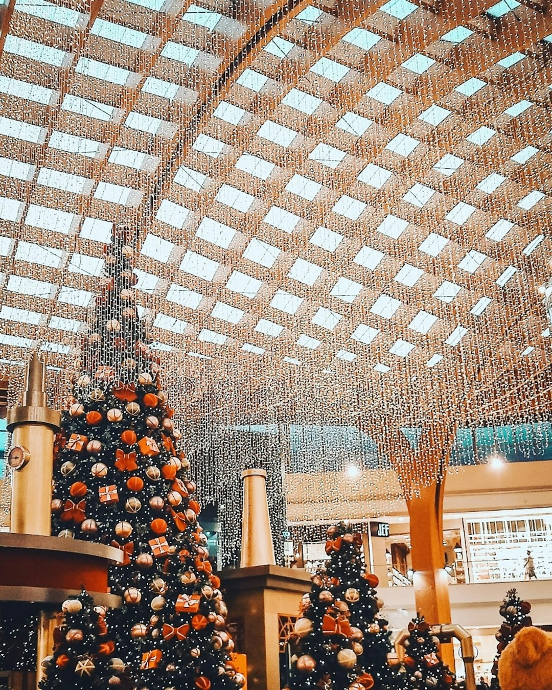

Carnaval

La fiesta más grande de Brasil, con desfiles espectaculares, samba, disfraces coloridos y celebraciones en las calles de Río de Janeiro, Salvador y otras ciudades.
📍 Ubicación
Río de Janeiro, Salvador, São Paulo y otras ciudades principales.
👥 Asistencia
Millones de personas en todo el país.
🎭 Tradiciones y Actividades
- Desfiles de escolas de samba con carros alegóricos espectaculares.
- Blocos de rua (grupos callejeros) que recorren las ciudades.
- Concursos de disfraces y fantasías elaboradas.
- Bailes de máscaras en clubes y hoteles.
- Sambódromo: estadio especial para los desfiles principales.
🍴 Comida Típica
Feijoada, Caipirinha, Acarajé, Pastel, Churrasco, Brigadeiro.
🎶 Música y Danza
Samba, Samba-enredo, Marchinha, Axé, Frevo, Maracatu.
Festival de Parintins

Competencia folclórica entre los grupos Boi Garantido y Boi Caprichoso con espectáculos de música, danza y mitología amazónica.
📍 Ubicación
Parintins, Amazonas.
👥 Asistencia
Más de 100.000 personas.
🎭 Tradiciones y Actividades
- Competencia entre Boi Garantido (rojo) y Boi Caprichoso (azul).
- Espectáculos con mitología amazónica.
- Danzas folclóricas.
- Carrozas gigantes y alegorías.
🍴 Comida Típica
- Tacacá.
- Pato no tucupi.
- Maniçoba.
🎶 Música y Danza
- Toadas.
- Ritmos amazónicos.
Festas Juninas

Fiestas populares en junio que celebran a San Antonio, San Juan y San Pedro, con bailes, comidas típicas y ambiente rural.
📍 Ubicación
Todo Brasil, especialmente en el nordeste.
👥 Asistencia
Millones de personas en comunidades rurales y urbanas.
🎭 Tradiciones y Actividades
- Bailes de quadrilha.
- Fogatas.
- Concursos de disfraces campesinos.
- Juegos típicos.
🍴 Comida Típica
- Pamonha.
- Canjica.
- Maíz asado.
- Bolo de fubá.
🎶 Música y Danza
Círio de Nazaré

Una de las mayores manifestaciones religiosas del mundo, celebrada en Belém en honor a la Virgen de Nazaré.
📍 Ubicación
Belém, Pará.
👥 Asistencia
Más de 2 millones de personas.
🎭 Tradiciones y Actividades
- Procesión con la imagen de la Virgen de Nazaré.
- Misas y novenas.
- Eventos culturales y religiosos.
🍴 Comida Típica
- Maniçoba.
- Pato no tucupi.
🎶 Música y Danza
- Cantos religiosos.
- Música sacra.
Navidad y Año Nuevo

La Navidad se celebra con cenas familiares y decoraciones luminosas, mientras que el Año Nuevo se vive en las playas con millones de personas vestidas de blanco.
📍 Ubicación
Todo Brasil, especialmente Río de Janeiro.
👥 Asistencia
Millones de personas en las playas.
🎭 Tradiciones y Actividades
- Cenas familiares en Navidad.
- Decoraciones luminosas.
- Celebración de Año Nuevo en Copacabana.
- Ofrendas a Yemanjá.
- Fuegos artificiales sobre el mar.
🍴 Comida Típica
- Panettone.
- Peru asado.
- Rabanada.
🎶 Música y Danza